PM · UI/UX · Cloud Infra
DERO 3D 배치 시뮬레이터 · 렌더 성능 예산 | 멍경찰과 냥도둑 입력 채널 설계 | 실시간 퀴즈 쇼 습관을 안 바꾸는 설계
AWS 예약 서비스 멀티 리전 · 비용 구조 분해 | DERO EC2 1대 무중단 배포 | Lumière 터널 고정화
Bimp 인식 한계를 전제로 한 설계 | 영화 추천(NCF) 과적합 판정 | 인천 카페 설명 가능성 우선
검은 칩 = 주력(막혔을 때 스스로 원인을 찾아 끝까지 간 기술) · 흰 칩 = 팀 프로젝트에서 써본 기술
sungeun-portfolio.vercel.app
제품을 고르는 화면과 내 책상에 놓아보는 화면을 하나로 합친 서비스. EC2 한 대에서 무중단 배포까지 끌고 갔습니다. SSAFY 공통 프로젝트 경진대회 우수상 · 서비스 운영 중(dero.life)
127.0.0.1 바인딩으로 평문 노출 제거, jenkins sudo는 두 명령만 허용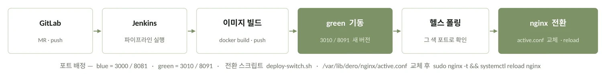
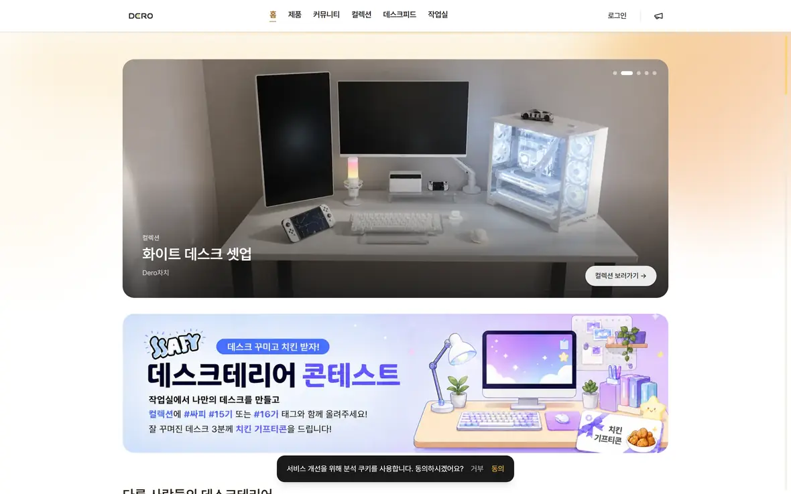
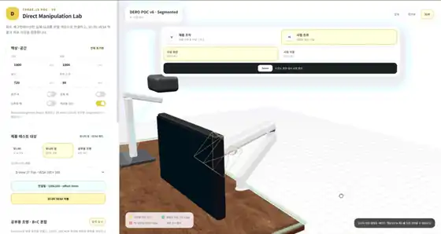
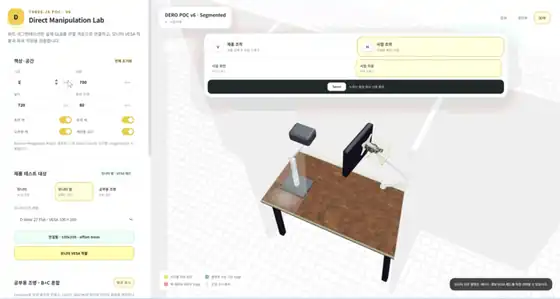
이 서비스의 유입 경로가 검색이기 때문입니다. 성장 축이 ‘커뮤니티 게시글 → 제품 → 탐색’ 순환인데, 게시글이 검색에 걸리지 않으면 이 순환의 입구가 없습니다. CSR이면 크롤러가 받아가는 건 빈 HTML입니다.
그래서 “React를 쓰자”가 아니라 “SSR을 해야 한다”가 먼저였습니다. Vite SPA는 SEO 포기, SSG는 게시글·재고가 수시로 바뀌어 기각했습니다.
성과커뮤니티 게시글이 검색에 노출 — 유입 순환의 입구 확보
감수EC2 한 대에 Node 런타임이 상주합니다. Jenkins·Postgres·Redis·ES가 이미 올라간 인스턴스라 메모리 여유가 줄었습니다.
했고, 그게 교과서적인 답처럼 보였습니다. 그런데 조회 단위를 그려보니 안 맞았습니다. 모델 하나를 불러올 때 GLB(비정형)와 관절 좌표·VESA 규격·치수(정형)를 한 번에 가져와야 배치와 호환성 판정이 됩니다.
둘을 다른 저장소에 두면 모델 1건 조회에 두 DB를 왕복하고 트랜잭션 경계가 갈라집니다. PostgreSQL은 JSONB로 비정형을 담으면서 관계형 제약을 유지해 한 쿼리로 끝납니다.
성과모델 1건 조회가 한 쿼리로 완료. 운영 인원 1명 기준 관리 대상 DB도 한 벌
감수대용량 문서 저장·샤딩은 MongoDB보다 불리. 수십만 건대로 커지면 다시 봐야 합니다.
Draco가 지오메트리 압축에서 더 효율적이고 성능도 확실합니다. 이건 우리가 더 잘 알아본 결과가 아니라 그냥 사실입니다.
문제는 조합이었습니다. 텍스처는 KTX2로 가기로 정해져 있었는데, three.js에서 Draco 로더와 KTX2 로더를 같이 무는 지점이 매끄럽지 않았습니다. 6주 안에 둘 다 안정적으로 붙는다는 확신이 없었습니다.
그래서 확실히 붙는 축 하나(KTX2)만 가져가고 폴리곤은 토폴로지 단순화로 줄였습니다.
판단기술적 우열로 진 결정이 아니라 기간 안에 검증 가능한 범위로 물러선 결정입니다. 다시 한다면 그 연결부터 스파이크로 떼어내 검증하고 시작하겠습니다.
인코딩·디코딩을 더하면 전송량은 줄지만 클라이언트에서 디코딩하는 시간만큼 호출 시간이 늘어납니다. 용량과 초기 렌더 시간을 맞바꾸는 거래라서, 압축률이 곧 답은 아니었습니다.
POC로 텍스처 프로필을 재고 골랐습니다 — 경량 21.3 / 균형 42.6 / 고품질 47.9 MiB. MVP 기본값은 경량, 나머지는 지연 로드.
성과소품당 20K~50K 삼각형 예산 확정. 감이 아니라 측정값으로 기본 프로필 결정
감수회전 중에는 디테일을 낮춥니다 — 시점 고정이 목표이지 회전 중 디테일이 목표는 아니라고 봤습니다.
솔직하게 말하면 비용 때문입니다. 관리형 APM은 호스트 단위 월 고정비가 붙습니다. 학생 팀 프로젝트에서 관측에 구독료를 쓸 수 없었습니다.
성과관측 스택 추가 과금 0원. 메트릭과 로그를 분리해 EC2 안에서 완결
감수서버가 죽으면 관측 도구도 같이 죽습니다 — 정작 장애 순간에 못 보는 구조라는 걸 알면서 선택했습니다. 예산이 있었다면 관측만큼은 서비스와 같은 서버에 두지 않았을 것입니다.
127.0.0.1:3000·8081이 하드코딩돼 있어, docker compose -p dero up -d가 같은 컨테이너를 제자리 교체하고 있었습니다. 구조상 끊길 수밖에 없었습니다.proxy_pass → compose 포트 바인딩 → Jenkinsfile의 -p 프로젝트명.name: dero 삭제 + upstream conf 두 벌 + deploy-switch.sh. health 폴링을 통과해야만 트래픽이 넘어가고, 실패하면 blue가 그대로 유지됩니다.Prometheus가 backend:8080을 노려, blue·green이 겹치는 수십 초 동안 지표가 두 버전 사이를 라운드로빈합니다.
색별 별칭 + 타깃 2개로 갈 수 있지만 평상시 한쪽이 DOWN으로 뜹니다. 겹침 창이 짧아 문서에 남기는 쪽을 택했습니다.
각자 무엇을 하는지 주 단위로만 알 수 있어 겹치는 작업과 대기가 생겼습니다. 사람이 아니라 구조 문제였습니다 — 업무 단위가 ‘기능’이라 병렬화가 안 됐습니다. 주간/데일리 스크럼 · Jira 이슈 컨벤션 + 스토리 포인트 · API 명세 사전 정리를 제안했습니다. 결과: 요구 기능이 3개 → 6개로 늘었을 때 기존 스토리에 추가만으로 대응, 일정 지연 없음.
코드보다 ADR을 먼저 썼습니다. blue-green을 켜기 전 마이그레이션 정책부터 정한 덕에 첫 스키마 변경에서 파이프라인이 멈추지 않았습니다.
메모리 실측이 뒤였습니다. 6개 프로세스가 이미 올라간 EC2에 한 벌을 더 띄우는 결정을 free -m을 보기 전에 내렸습니다.
발표 리허설에서 “경량화를 어떻게 했는지 설명이 없다”는 지적을 받았습니다. 판단은 했는데 판단의 기준을 남기지 않은 것이 문제였습니다.
자원 실측 → 정책(ADR) → 코드 순서로 갑니다. 결과 숫자를 쓸 때 기준을 같은 줄에 적습니다.
배포로 끝내지 않고 장애 추적·확장성·비용까지 관리 가능한 구조로. “안정성을 얼마나 살 것인가”를 기술 선택이 아니라 기준 설정 문제로 놓았습니다. Cloud DX Academy 프로젝트 경진대회 최우수상
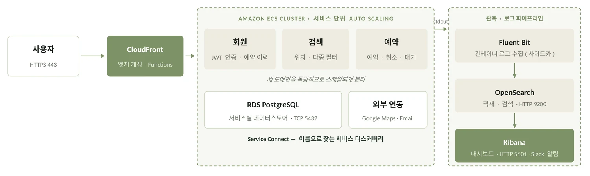
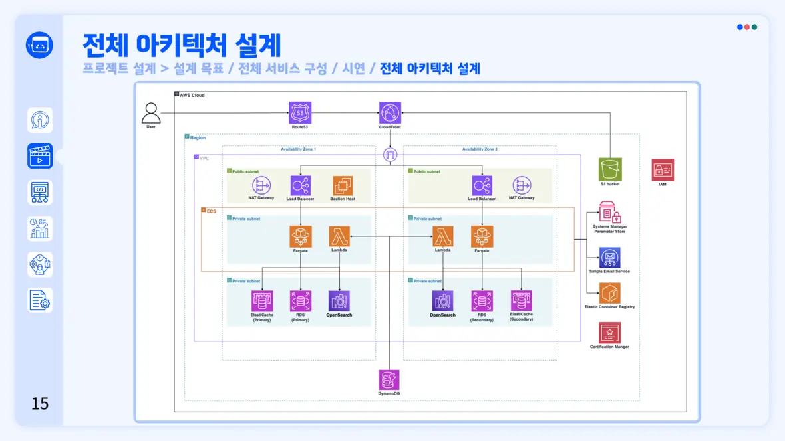
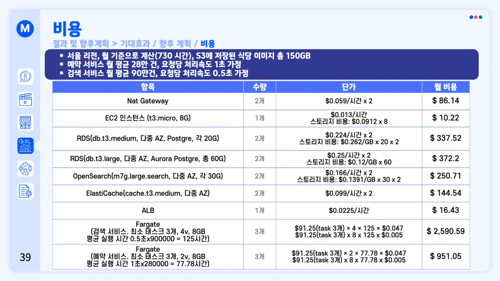
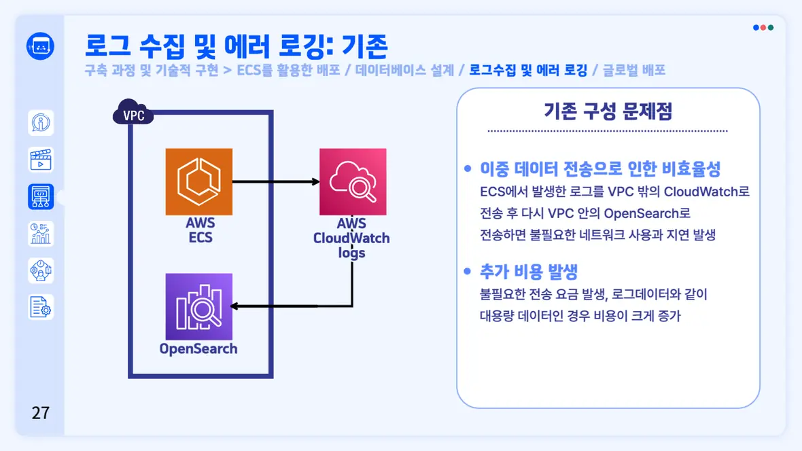
| 대안 | 얻는 것 | 치르는 것 | 판정 |
|---|---|---|---|
| A. 단일 리전 + 백업 | 가장 저렴 | 리전 장애 시 서비스 전체 정지 | 기각 |
| B. 멀티 리전 Active-Active | 전환 시간 거의 0 | 두 리전 상시 구동 → 고정비 두 배 | 기각 |
| C. 멀티 리전 3-Tier (Active-Standby) | 리전 장애 대응 범위 확보 | 전환 시간 · 복제 지연 | 채택 |
선택 기준은 단 하나, “운영할 사람이 없다” 였습니다. EC2 직접 배포는 OS 패치·스케일·헬스체크가 전부 우리 몫이고, EKS는 컨트롤 플레인 고정비에 학습·운영 비용이 프로젝트 기간을 넘겼습니다.
성과서버 인스턴스를 관리 대상에서 제거 — 인프라 전담 없이도 배포가 돌아감
감수AWS 종속이 깊어집니다. 기간과 인력이 제약인 프로젝트에서 이식성은 지금 사지 않아도 되는 보험이라고 판단했습니다.
예약은 중복이 생기면 안 되는 정합성 문제이고, 조회·세션은 요청이 몰리는 속도 문제입니다. 하나로 통일하면 둘 중 하나는 잘못된 도구를 씁니다.
기준DERO에서는 정반대로 PostgreSQL 하나로 합쳤습니다. 거기선 두 성격의 데이터를 같은 조회에서 같이 봐야 했고, 여기선 서로 다른 요청 경로에 있었습니다. 기준은 ‘데이터의 종류’가 아니라 ‘같이 조회되는가’ 였습니다.
구성을 정하기 전에 비용과 안정성의 기준을 팀 합의로 먼저 정한 것. 이후 모든 선택이 그 기준으로 판정됐습니다.
관측을 설계 단계가 아니라 문제를 겪은 뒤에 붙였습니다. 실제 부하도 재보지 않고 예상 사용량만으로 산정했습니다.
관측은 기능이 아니라 전제입니다. 분산 환경에서 “어디서 터졌는지 모른다”는 상태 자체가 장애입니다.
컨테이너를 2개 이상 띄우기로 결정한 그 시점에 로그 경로를 같은 그림에 그립니다.
직접 입력의 불편을 이미지 인식으로 줄인 졸업 프로젝트. 문제를 ‘추천’이 아니라 ‘등록’으로 재정의한 데서 모든 설계가 따라 나왔습니다. 대한산업공학회 캡스톤디자인 경진대회 장려상
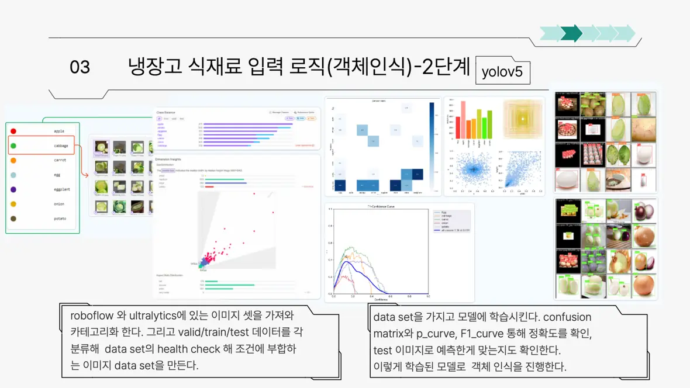
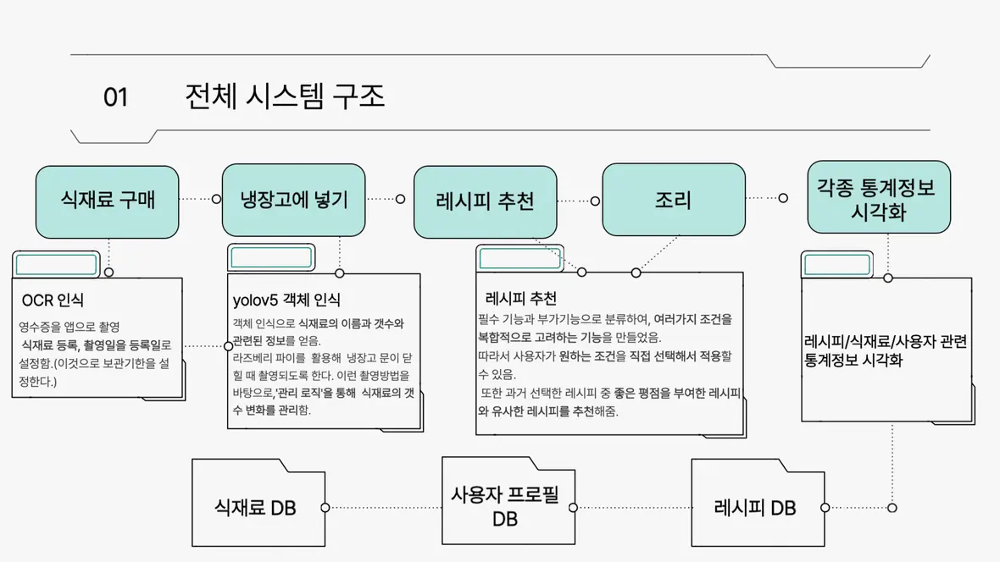
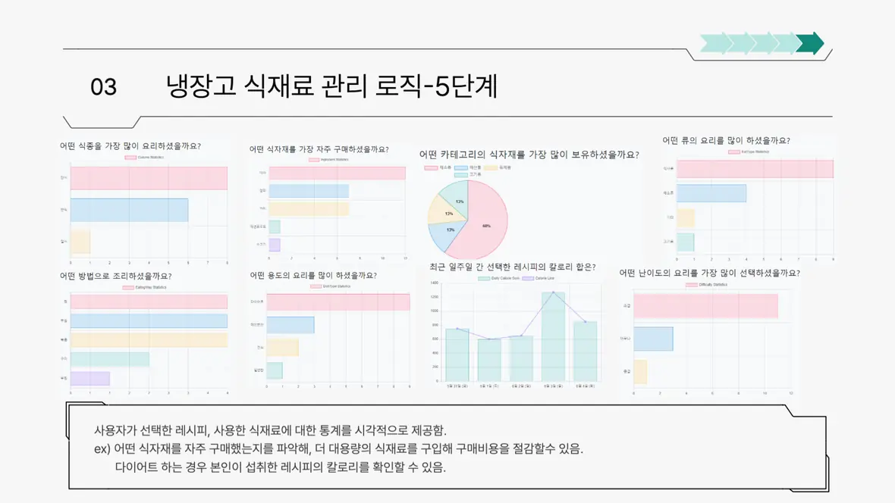
진단은 받아도 “그래서 뭘 사야 하나”로 이어지지 않는 빈 칸을 메운 서비스. 2인 팀이라 코드 이전에 모델 출력 스키마와 서버 입력 스키마를 문서로 먼저 확정했고, 덕분에 모델 정확도를 손보는 동안 서버가 멈추지 않았습니다.
성과재시작마다 바뀌던 ngrok 주소를 Cloudflare Tunnel 고정 도메인으로 전환 — 갱신 지점 3곳(프론트 .env·OAuth Redirect·CORS)이 한 번만 설정하는 값이 됨
배운 것휴먼 에러를 줄이는 방법은 “조심하기”가 아니라 바뀌는 값을 안 바뀌게 만드는 것이었습니다. 증상이 4종이라 원인도 4개인 줄 알았는데 전부 같은 원인이었습니다.
전용 출제 페이지를 만들면 ‘정리 → 옮겨적기’ 단계가 늘어 줄이려던 시간을 다시 씁니다. 대신 Notion API로 출제자 단위
child_database를 탐색해, 평소처럼 정리만 하면 그게 그대로 문제가 되게 했습니다.
성과회차당 준비시간 3~4시간 → 2시간
감수동시성을 풀지 않고 비껴갔습니다. 제대로 하려면 서버를 상시 운영해야 하는데, 준비시간을 줄이려 만든 도구에 운영 비용이 생기면 목적이 뒤집힙니다. 로컬 실행 + 같은 네트워크로 범위를 좁혔고, 원격 참여는 불가능합니다.
추격 중 손은 이미 이동과 아이템 칸에 묶여 있어 음성이 유일하게 비어 있는 입력 채널이었습니다. 기능이 멋있어서가 아니라 남은 게 그것뿐이었습니다. 자유 발화는 오인식과 응답 지연이 곧 추격 실패라 기각하고, 명령 5종을 강아지가 실제로 할 수 있는 행동에 1:1 대응시켰습니다.
아쉬운 점LLM을 붙이고 나서야 실시간 게임에서 응답 지연이 곧 조작 지연임을 알았습니다. 기능을 먼저 붙이고 범위를 나중에 줄였습니다 — 순서가 반대였습니다. 밸런스는 1인이라 검증하지 못했고, 지금 근거는 설계 논리이지 플레이 데이터가 아닙니다.
기성 데이터가 없어 인천 행정동을 직접 크롤링, 150개 행정동의 카페 점포 특성표를 만들었습니다(지역특성·근접점포개수·근접점포비율·지역점포규모·지역매출·지역영업이익·중요고객층). 리뷰는 BERT로 전처리해 수치 변수와 같은 표에 올렸습니다.
성과목표를 정확도가 아니라 설명 가능성에 두고 SHAP으로 기여도 분해 — “근접점포비율이 이만큼 끌어내린다”처럼 말할 수 있게
한계크롤링 스냅샷 한 장으로 판단했습니다. 상권은 계속 변하는데 시계열로 보지 못한 것이 가장 큰 한계입니다.
GMF와 NNMF를 나란히 만들어 학습 성능이 아니라 훈련·테스트 격차로 골랐습니다. GMF는 학습은 매우 잘 됐지만 격차가 컸고(과적합), NNMF는 곡선이 덜 화려해도 격차가 작았습니다 → NNMF 채택.
배운 것딥러닝을 쓰는 이유(복잡한 패턴 학습)가 그대로 과적합의 원인이 됩니다. 결과를 보고 지표를 고르면 무엇이든 정당화되므로 기준을 먼저 정했습니다.
SnapHere — 관광데이터 활용 공모전. DERO에서 만든 협업 절차(이슈 컨벤션·API 명세 사전 정리·PR 리뷰)를 그대로 가져와 시작했습니다.
모노레포 · main → develop → feature · MR 리뷰 필수.
ChADa — 2년간 논문 리뷰 → 모델 직접 구현 → 발표를 반복. ETRI Fashion-How Season 5 참가(베이스라인 분석·데이터 증강·ResNet 모델링). 버전별 결과를 표로 남기는 습관이 여기서 왔고, Bimp의 YOLO 모델링과 영화추천 비교 실험이 전부 이 절차 위에서 진행됐습니다.
포스텔의 법칙 · 견고함의 법칙
Be conservative in what you do, be liberal in what you accept from others.
상세 산출물(ERD 설계서, 아키텍처 문서, 배포 트러블슈팅 기록, 각 프로젝트 보고서)은 요청 주시면 보내드립니다.
DERO 소스는 SSAFY 사내 GitLab에 있어 외부 열람이 제한됩니다 — 공개 미러 준비 중입니다.